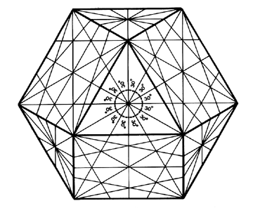

Fig. 841.30 Trisection by Inherent Axial Spin: The 12 great circles of the vector equilibrium inherently trisect each of its eight equiangular faces, centrally subdividing each of them into twelve 30-degree angles.
Copyright © 1997 Estate of R. Buckminster Fuller